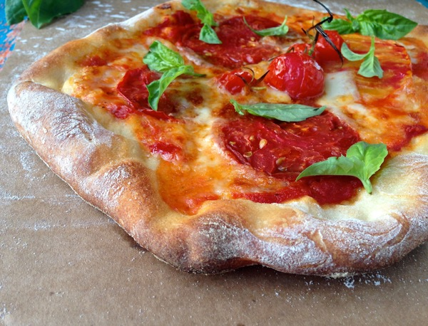

Ingredients
- Ingredients
- 2 tsp dry active yeast
- 1 tbs sugar
- 1&1/3 cup of warm water
- 3 cups all purpose flour
- 1 tsp salt
- 2 tbs olive oil
Description
This pizza dough recipe is a game-changer for any home cook. It yields a perfectly balanced crust that’s both crispy on the outside and delightfully chewy on the inside. The dough is easy to work with, making it ideal for beginners and seasoned pizza makers alike. Whether you’re crafting a classic Margherita or a loaded meat lover’s pizza, this dough provides the perfect foundation for all your favorite toppings!
Steps
- Mix together warm water, sugar, and yeast and allow to sit till frothy
- Add in flour, salt, and olive oil
- Mix till a shaggy dough is formed
- Move to a flour covered surface and knead until smooth
- Place dough in clean oiled bowl and cover
- Place the bowl in a warm area and allow to double in size(approx. 90 min)
- Divide dough in two
- Cook now (or freeze for later and allow dough to come to room temp before cooking)
- Roll out your dough and place in oven at 350 for 5-7 minutes to pre-bake
- Add desired toppings and place back in oven till cheese is bubbly and crust is golden
Notes
- This is a recipe that takes some patience but it will be so worth it!
Recommendation
My go to is a margherita pizza with extra cheese and pepperoni.
You'll need:
- Pizza sauce (I like to sprinkle fresh minced garlic into my sauce)
- Pizza blend cheese
- Mozzarella cheese
- Peperoni
- Tomato
- basil
Storage
- Store your cooked pizza in an airtight container in the fridge for up to 3 days.
- Store pizza dough in the fridge for up to 5 days.
- Store pizza dough in the freezer for up to 3 months.